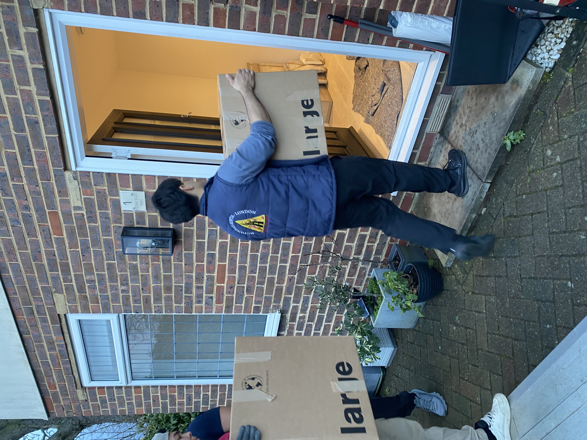
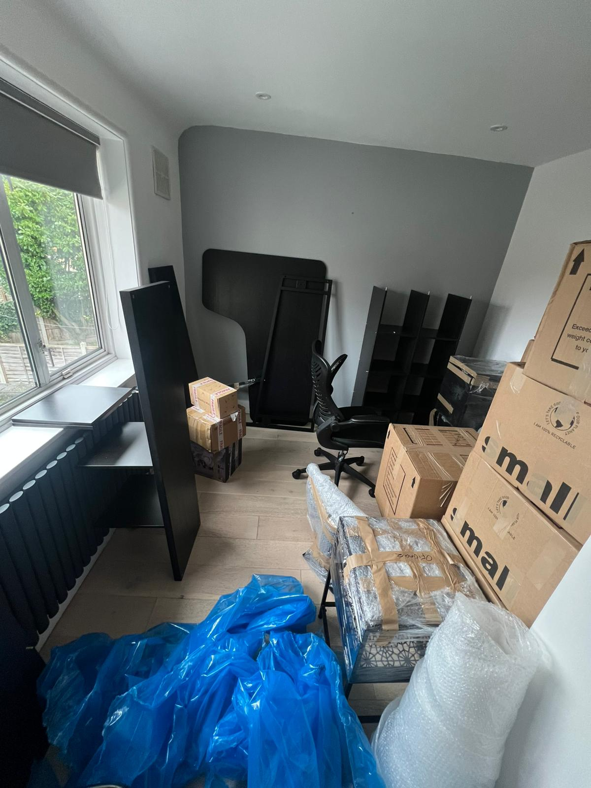
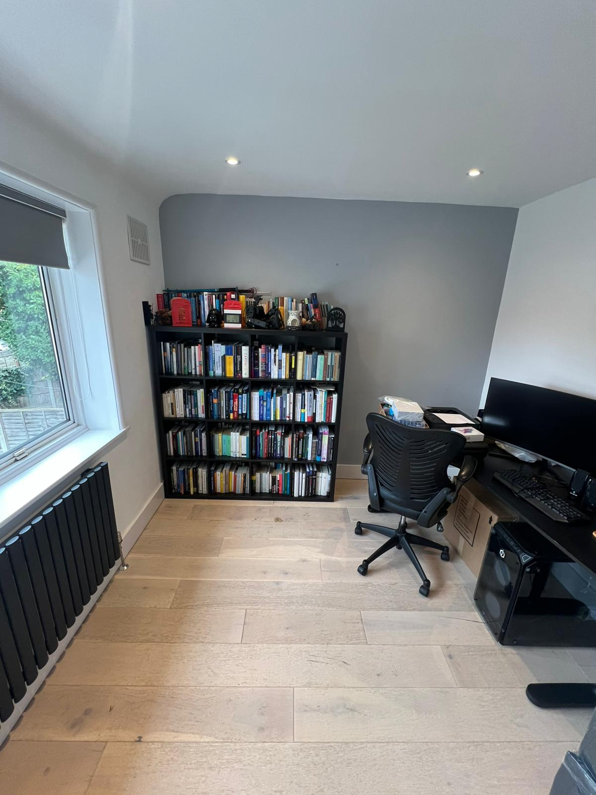

If a 2-bed flat typically takes 4-6 hours to move, a 3-bed house is naturally a bigger job — more rooms, more furniture, and often more to navigate at both ends. Here's a direct answer: a 3-bed house removal in London typically costs between £800 and £2,000+, depending on how much help you need — from a straightforward move with everything already packed, through to a full-service move where our crew handles everything. Below, we break down real pricing for each option, what affects the time, and two genuine house moves we've done — the good and the more complicated.
Get your exact price in seconds using our instant quote calculator — just your pickup address, dropoff address, and number of assistants. No inventory list, no waiting for a callback.
How Much Does a 3-Bed House Move Cost in London?
If you're comparing house removal quotes in London, the total house removal cost depends on how much of the work you'd like us to handle:
- Move only, boxes packed and furniture already dismantled: typically £800-£1,400. This is the lower end, since your crew's time goes straight into loading, transporting, and unloading, without needing to pack anything or take furniture apart first.
- Move with some packing help and disassembly/assembly: typically £1,300-£1,800. This covers jobs where you need help packing fragile items like TVs, plus some furniture taken apart and reassembled at the other end — common for most real house moves.
- Full-service move (packing, moving, and full unpacking/organisation at the destination): typically £2,000+. Our crew handles everything from start to finish — see the full case study below.
The full-service option is especially worth considering for families or couples with limited time available — it removes the need to take time off work just to pack, and means you're settled into an organised home rather than surrounded by boxes.
Choose the Right Crew Size for a House Move
A 3-bed house typically requires a minimum of 2 Luton vans — there simply isn't enough capacity in a single van for a full house's worth of belongings. Two common approaches:
Single van pricing
If going with one van and doing multiple trips:
| Option | Price | What's included |
|---|---|---|
| No assistants | £60/hr | Van + driver — you carry items yourself |
| 1 assistant | £85/hr | 1 assistant loads |
| 2 assistants | £110/hr | 2 assistants load |
| 3 assistants | £135/hr | 3 assistants load |
Two-van pricing
Most common for house moves: each van + driver is charged at £60/hr, plus £25/hr per additional assistant. For example, 2 vans with 3 assistants works out to £195/hr:
£60 × 2 vans + £25 × 3 assistants = £120 + £75 = £195/hr
| Option | Price | How it's calculated |
|---|---|---|
| 2 vans (drivers only) | £120/hr | £60 × 2 vans |
| 2 vans + 1 assistant | £145/hr | £120 + £25 |
| 2 vans + 2 assistants | £170/hr | £120 + £50 |
| 2 vans + 3 assistants | £195/hr | £120 + £75 |
For house moves specifically, we generally recommend either 3 assistants + 2 Luton vans, or 1 Luton van + 2-3 assistants doing multiple trips if parking or access makes two vans impractical. We recommend a minimum of 3 assistants for house moves — these jobs are physically demanding, especially with multiple stairs or floors involved, and having fewer people significantly extends the day.
Plus mileage at £1.50/mile. All bookings include a 2-hour minimum, and after that you're billed fairly for the actual time your move takes — no hidden fees or surprise costs.
How Long Does a 3-Bed House Move Actually Take?
Worth being clear about what kind of service you're comparing this to. Our full pack/move/unpack service (covered below) is a premium option for customers who don't want to lift a finger. Most customers just want the move itself — here's what that typically looks like:
Standard move-only day: 6-10 hours. This is the realistic range for a straightforward 3-bed house move with a full crew, no packing service.
10+ hours when multiple factors combine:
- Narrow or difficult access at either property
- Heavy congested traffic on the drive between addresses
- 3rd floor or higher at either end, with no lift
- Long walking distances between the van and the front door
- Items needing disassembly or assembly on-site
Real Example: When a House Move Runs Long — Clapham to Sutton/Wallington
A genuine example of what can push a house move toward the higher end: a move from a semi-detached house in Clapham to a bigger house in Sutton/Wallington. We sent a 3-person crew — one disassembling items while the other two loaded — using 2 Luton vans, plus a second trip with one of them once everything was accounted for. Three van-loads in total.
The job took 12 hours, but the bulk of that time wasn't the physical work itself — it was a roughly 2-hour wait for the customer to receive keys from the landlord. UK key exchanges often happen on the day of the move itself, entirely out of anyone's control, which is worth planning around if you're in a similar situation.
What drove the high item volume on that job is worth knowing, since it's common in longer-term house moves:
- A packed loft, garage, or shed — tools, bikes, lawnmowers, and patio furniture take up large amounts of awkward, unstackable space
- Large freestanding furniture that can't be dismantled — wardrobes, bookcases, and display cabinets take up huge chunks of van volume
- 60-70+ boxes — common after many years in one property, once books, paperwork, clothes, and children's items accumulate
If any of this sounds like your situation, it's worth mentioning when you book, so we can plan the right crew and van setup from the start.
Real Example: Full Packing, Move & Unpack Service — Moving Into a New House
For customers who'd rather not handle any of it themselves, our full-service package covers packing, moving, and unpacking. A recent example: a family with young children, moving from a 3-bed flat into a house, spread across three days.
Day 1 — Packing (6 hours, 4-man crew). Two men worked simultaneously per room across the living room, kitchen, bathroom, and bedrooms. Boxes were labelled by room. TVs wrapped in bubblewrap, kitchen items wrapped in kitchen paper, furniture like chests of drawers wrapped in plastic film. The family had a lot of belongings, as is common with young children in the house.

Day 2 — Move day (~8 hours, 4-man crew, 2 full Luton vans). Both vans were filled completely. The crew also assembled essential furniture on arrival — bedroom furniture, the sofa, and washing machine installation — so the family had a functioning home from day one.

Day 3 — Unpacking (5-6 hours, 4-man crew). Everything was placed according to the room labels from day 1. The house was left immaculate and ready to live in, with the family able to settle in without lifting a finger.


Total across all three days: roughly 19-20 hours of crew time for a complete pack, move, unpack, and setup service.
What Affects Your House Removal Cost
Floors and stairs. Many London terraced and semi-detached houses still have internal stairs even without being flats — this adds real time to both loading and unloading, same as in any multi-storey property.
Parking and access. Whether you have a driveway, gated access, or need to rely on street parking makes a real difference to how quickly the crew can work.
Garden, garage, or loft items. These are often overlooked when estimating volume but can add significantly to both time and van space needed.
Distance and traffic. Longer cross-London moves add both drive time and cost via mileage.
Furniture that needs dismantling. Large wardrobes, bed frames, and similar items add time — see our 2-bed flat move guide for a detailed breakdown of typical dismantle and assembly times per item.
How Our Pricing Works
All moves include a 2-hour minimum booking, even if the job takes less time. After the first two hours, you're only charged for the total time our team works on your move — from when loading begins at the pickup address until unloading is complete at the destination. We believe in transparent pricing — no hidden fees or surprise costs.
Local to Morden, Mitcham, Tooting, Balham, Wandsworth
We cover house moves across South West London, including Morden, Mitcham, Tooting, Balham, Wandsworth, and surrounding areas — with fully insured, experienced teams who know how to handle the scale of a full house move, not just a flat.
Get Your Exact Price Now
Whether you need a full house removal quote or just want to compare against the ranges above, get your exact price in seconds.
Ready to price your house move? Use the calculator for an instant estimate based on your addresses and crew size.
Get an instant quote →For larger house moves, sending us a rough idea of what you're moving (including loft, garage, or garden items) helps us recommend the right crew size and van setup from the start.